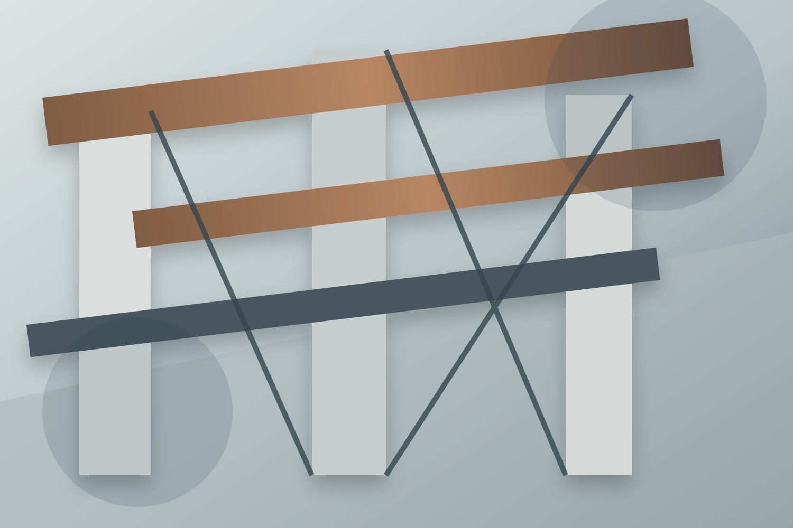

Anfrage & Grundlagen
Projektziel, Bauort, vorhandene Pläne und Rahmenbedingungen werden gemeinsam eingeordnet.
RG INGENIEURE / DINKELSBÜHL · ELLWANGEN · MÜNCHEN
Tragwerksplanung verbindet die Idee mit dem, was sie trägt. Für Neubauten und das Weiterbauen im Bestand.

01 / KOMPETENZ
Vom Wohnhaus bis zum öffentlichen Bauwerk: Jede Aufgabe stellt eigene Anforderungen an Material, Konstruktion und Zusammenarbeit.
Ein schlüssiges Tragwerk beginnt mit dem Entwurf. Konstruktion und Architektur werden zusammen gedacht – im Austausch mit allen Beteiligten.
WOHNUNGSBAU · INDUSTRIEBAU · ÖFFENTLICHE BAUTENDie rechnerische Grundlage für das Bauvorhaben: prüffähige statische Nachweise für Konstruktionen aus Stahlbeton, Stahl und Holz.
STAHLBETON · STAHL · HOLZVom Nachweis zum Detail: Mitwirkung an der Ausführungsplanung und Abstimmung mit Architektur, Bauherrschaft und Prüfingenieuren.
NEUBAU · BESTAND · AUSFÜHRUNGSPLANUNGBestehende Tragstrukturen verstehen, Veränderungen konstruktiv einordnen und Eingriffe so planen, dass Alt und Neu sinnvoll zusammenspielen.
UMBAU · ERWEITERUNG · BESTANDSAUFNAHME02 / PROJEKTABLAUF
Projektziel, Bauort, vorhandene Pläne und Rahmenbedingungen werden gemeinsam eingeordnet.
Aus Entwurf und Nutzung entsteht eine konstruktive Idee, die Architektur und Machbarkeit verbindet.
Nachweise, Dimensionierung und Schnittstellen werden mit den Projektbeteiligten abgestimmt.
Die Ergebnisse werden nachvollziehbar dokumentiert und für die nächsten Planungsschritte aufbereitet.
03 / ZUSAMMENARBEIT
Für private oder gewerbliche Bauvorhaben, bei denen Konstruktion früh verlässlich geklärt werden soll.
Als konstruktiver Planungspartner im Dialog zwischen Entwurf, Material und technischer Umsetzbarkeit.
Für Neubau, Erweiterung oder Umbau mit klaren Anforderungen an Planung und Koordination.
Für planungsintensive Bauaufgaben mit nachvollziehbaren Nachweisen und strukturierten Abstimmungen.
04 / DAS BÜRO
Zentrale in Dinkelsbühl.
Stützpunkte in Ellwangen und München.
Gute Planung entsteht
im Gespräch.
RG Ingenieure ist ein Ingenieurbüro für Bauwesen mit Zentrale in Dinkelsbühl und Stützpunkten in Ellwangen und München. Im Mittelpunkt stehen die Konstruktion und die Zusammenarbeit mit den Menschen hinter dem Bauvorhaben.
Mehr über RG Ingenieure ↗05 / STANDORTE
Dipl.-Ing. Univ. H. Ruck
St.-Leonhard-Str. 1
91550 Dinkelsbühl
Dipl.-Ing. Andreas Hutter
Priestergasse 17
73479 Ellwangen
Dr.-Ing. Veronika Hofmann
Arthur Honegger Weg 8
80939 München
06 / KARRIERE
Eine Aufgabe für Menschen, die Architektur auch konstruktiv verstehen wollen.
07 / PROJEKTANFRAGE
Ein paar Eckdaten reichen für den ersten Schritt. Beschreiben Sie Ihr Vorhaben kurz – RG Ingenieure klärt anschließend gemeinsam mit Ihnen die nächsten Schritte.
St.-Leonhard-Str. 1
91550 Dinkelsbühl